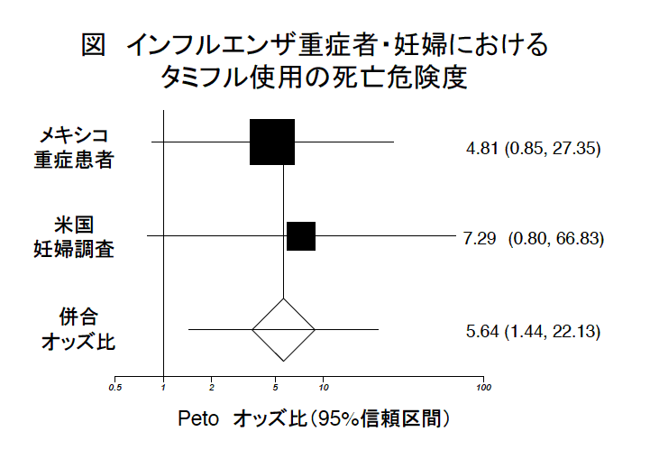

日本で、いわゆる「新型」インフルエンザで死亡した人について、前回に報告しました。今回は、メキシコや米国妊婦の重症例で、タミフルの使用で死亡の危険が増大する可能性について検討した結果を報告したいと思います。
最新の米国CDC（疾病コントロールセンター）の調査結果がランセット誌（Jamieson DJら、Lancet. 2009 Aug 8;374(9688):451-8. Epub 2009 Jul 28.）に掲載されました。4月14日から5月18日までの約1か月あまりの間にCDCに報告されたいわゆる「新形」インフルエンザに感染した妊婦は、確定例が31人、疑い例が３人でした。このうち１人が死亡。この妊婦は、重症化後にタミフルを服用しましたが死亡しました。タミフルを服用していたのは、34人の中17人(50％)でした。
死亡例については、さらに1か月延長した期間について報告がされています。4月15日から6月16日までの約２か月間に、「新形」インフルエンザでの死亡した人は合計45人いました。そのうち妊婦の死亡が６人でした（先の妊婦34人中の死亡１にも含まれています）。
その妊婦の死亡者全員にタミフルが使用されていたのです。
この２か月間で何人の妊婦がいわゆる「新形」インフルエンザにかかったのか、タミフルを服用していなかった人は何人いたのかがわかれば、死亡とタミフルとの関連が検討できるので、その数をこの報告中にないかと探したのですが、報告されていませんでした。
しかしながら、死亡者全員がタミフルを服用していたのですから、タミフルを服用しなかった妊婦で死亡者がいなかったことは確かです。
ところが、タミフルを服用しなかった妊婦で死亡した人はいなかったということについて、このCDC調査結果の中では、全く何も触れられていないのです。そこで、いろんなデータ（文末：注）を元に、その間の妊婦数とタミフル服用者数、タミフルを服用しなかった妊婦の数を推定してみました。
あくまで推定ですが、タミフル服用者は74人中6人死亡
タミフル非服用者37人中死亡は０と推定されました。
タミフルの服用は相当危険であるように見えます。
もうひとつの最新の調査（Perez-Padilla RらNew England Journal of Medicine,2009 Aug 13;361(7):680-9. Epub 2009 Jun 29.）は、メキシコからのいわゆる「新型インフルエンザ」による重症患者の報告です。
メキシコにおいて初期（4月）に重症化して入院した18人の調査結果が報告されました。
タミフル使用者は14人いて、そのうち7人が死亡し、
タミフルを飲まなかった4人は、死亡は０でした。
どちらの調査でも、タミフルを飲まずに死亡した人はおらず、死亡者はタミフルを飲んだ人ばかりでしたので、タミフルが死亡に関係している可能性が疑われます。ただ、個々に検討した結果では、統計学的には有意とはいえませんでした。
しかし、両方の調査を総合して検討すると、タミフルは死亡を5.6倍増加させる危険性がありうると計算できました（統計学的方法は文末参照）。
メキシコの調査でも、妊婦の調査でも、インフルエンザが発症して数日から１週間以上もしてタミフルが用いられていたことがかなり強調されているように見えます。それならば、遅れての使用方法は止めればよいはずですが、CDCでは相変わらず、遅くに使ってもよいと言っています。
メキシコの調査では、タミフルが使われた人の方がより重症だったという可能性がなくはありませんが、メキシコで入院した患者は全て重症者でしたし、そのようなコメントは、メキシコ調査の報告書には記載されていませんでした。
妊婦の調査報告では、そもそも、タミフルを使用しなかった妊婦は死亡が０であったということに何も触れていません。
「新型」との恐怖がばら撒かれる中で、WHOや米国CDCをはじめ世界中でタミフルがさも特効薬であるかのように捕らえられて、一般の方まで「タミフルがなければ」、「タミフルのおかげでよくなった」などと思い込まされているようです。
しかし、冷静に、最新のデータを分析した結果、以上のように、タミフルがインフルエンザによる死亡を増大させる可能性を示すデータが続々と出てきているのです。
そして、ようやく、軽症の人には不要、との考え方が出てきたようです。重症の人、ハイリスク者には危険で使えない、軽症の人には不要。それならば、全くタミフルは使い道がない、と判断してよいということになります。
冷静に考えていただきたいと思います。
注：タミフル服用妊婦数、非服用妊婦数を推計する元になったデータ
4月14日〜5月18日までに報告のあった妊婦の「新形」インフルエンザ罹患数34人、この間のインフルエンザ患者数全体の増加の程度（5469人から、17855人に増加）、タミフル服用率が、4月14日から4月30日までの発症者では20人中８人（40％）であり、5月1日から5月6日までの発症者では11人中8人（73％）であったというデータ。これらを考慮して計算した。
米国妊婦の調査と、メキシコ重症者の調査結果を総合して検討する方法には、メタ解析（meta-analysis）の手法を用いています（以下は、できるだけ一般の方にもわかりやすいように、平易に解説したつもりです）。
死亡に対するタミフルの服用の危険度（Petoオッズ比）は5.6倍と計算できました（統計学的に有意：図参照）。
統計学的に有意というのは、オッズ比の95%信頼区間と、p値で表します。
２つの調査結果を併合したPetoオッズ比の95%信頼区間は 1.44-22.13でした。
95%信頼区間の下限が1を超えると有意ですが、1.44とかなり超えています。
また、やはり統計用語で、p値が0.05未満なら有意とふつう考えますが、
p値は0.013でした、やはり0.05よりかなり小さい値であり、有意です。